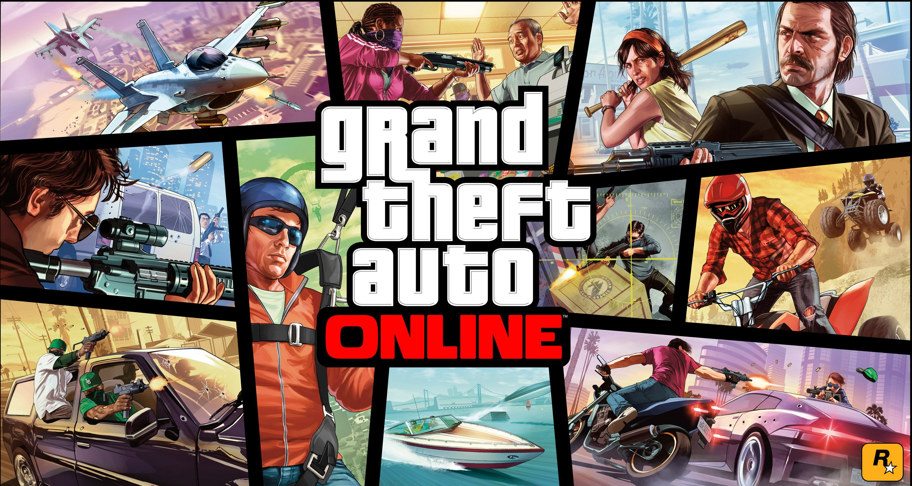
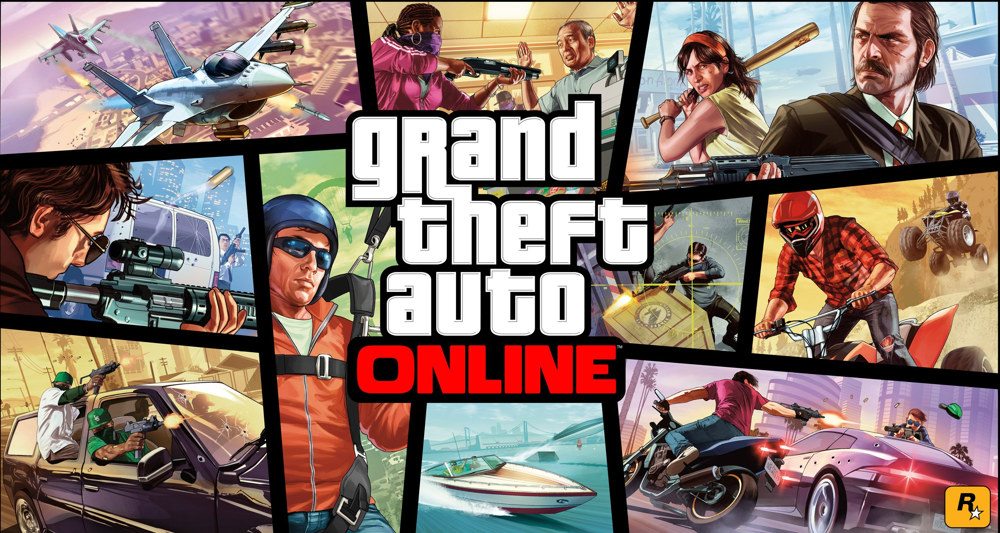

Grand Theft Auto Online (kurz GTA Online, GTA O) ist der Name des Mehrspieler-Spiels, das in Grand Theft Auto V enthalten ist und über den insgesamt 30 Spieler (auf PlayStation 3 und Xbox 360 nur 16 Spieler) gleichzeitig miteinander spielen können.
GTA Online startete am 1. Oktober 2013 und hatte zum Launch teilweise technische Probleme. Die Probleme wurden größtenteils mit einem Patch für die PlayStation 3 und Xbox 360 am 4. Oktober 2013 behoben. Aktuell hat die PlayStation 3 den GTA-V-/GTA-Online-Patch 1.36 und die Xbox 360 den GTA-V-/GTA-Online-Patch 1.29. Der neueste Patch für PlayStation 4 und Xbox One und den PC trägt die Versionsnummer 1.42.
Grand Theft Auto Online ist ein an sich eigenständiges Mehrspieler-Spiel und ist auf der Disc sowie in der digitalen Fassung von GTA V enthalten. Außerdem ist GTA Online für die Besitzer von GTA V kostenlos, jedoch gibt es Mikrotransaktionen mit echter Währung, die laut Rockstar Games jedoch kein Ungleichgewicht in das Spiel bringt.
Erste Bilder zu Grand Theft Auto Online wurden im ersten offiziellen Grand Theft Auto V-Gameplay-Trailer gezeigt (ab 4:34).
Dan Houser begründete den späteren Veröffentlichungstermin einen Tag vor Start von Grand Theft Auto Online damit, dass man erst den Einzelspieler spielen soll, um hinterher einen guten Anschluss an den Mehrspieler-Modus zu finden.
Die Geschehnisse von GTA Online spielen sechs Monate vor denen aus der Story von Grand Theft Auto V.
Es ist dem Spieler möglich, einen eigenen Charakter durch einen Charakterbaukasten zu erstellen. Besitzer der Grand Theft Auto V Collector’s Edition können dabei in der Charakter-Erstellung Charaktere aus älteren Teilen der Serie als Elternteil ihres Protagonisten wählen. Dies wirkt sich dann auf dessen Eigenschaften aus. Bekannte Charaktere, die als Erzeuger herhalten können, sind Niko Bellic aus Grand Theft Auto IV, sowie Claude und Misty aus Grand Theft Auto III. Des Weiteren kann auch John Marston, der Protagonist aus dem Rockstar-Titel Red Dead Redemption als Vater ausgewählt werden.
Der Spieler wird zunächst von Lamar beim Internationalen Flughafen von Los Santos abgeholt und durch einige Missionen in die Welt von GTA Online eingeführt und kann danach durch Jobs, wie Überfälle auf Bankfilialen oder Getränkeshops und Events, Geld und Reputationspunkte (RP) verdienen. Das Geld kann im Spiel für Kleidung, Fahrzeuge, von denen bis zu 10 Stück in einer Garage gespeichert werden können, und Waffen, sowie deren Aufwertungen, ausgegeben werden. Zudem ist es möglich, Immobilien zu kaufen und Freunde in diese einzuladen. Events wie Rennen (zu Wasser, an Land und in der Luft) oder Deathmatches finden statt, genauso wie Minispiele wie zum Beispiel Armdrücken. Zudem hat der Spieler die Möglichkeit, über den von Rockstar Games zur Verfügung gestellten Content Creator eigene Rennen und Deathmatches zu erstellen, diese mit Freunden zu spielen oder sie anderen Usern zur Verfügung zu stellen. Es gibt insgesamt an die 700 Missionen in GTA Online zu erledigen. Neben diesen von Rockstar Games entworfenen Events kann sich der Spieler in der Welt frei bewegen, tun und lassen, wozu er gerade Lust hat und dabei alle Möglichkeiten, die Grand Theft Auto V bietet, ausnutzen.
Auch die aus Max Payne 3 bekannten Crews kehren zurück, sodass man im Spiel mit Crewmitgliedern Jobs und Events erledigen oder einfach nur mit diesen abhängen kann.
Rockstar Games wird zukünftig neue Inhalte für GTA Online zur Verfügung stellen, damit es dem Spieler nicht langweilig wird (Missionen, Deathmatches, Rennen, Jobs usw.).